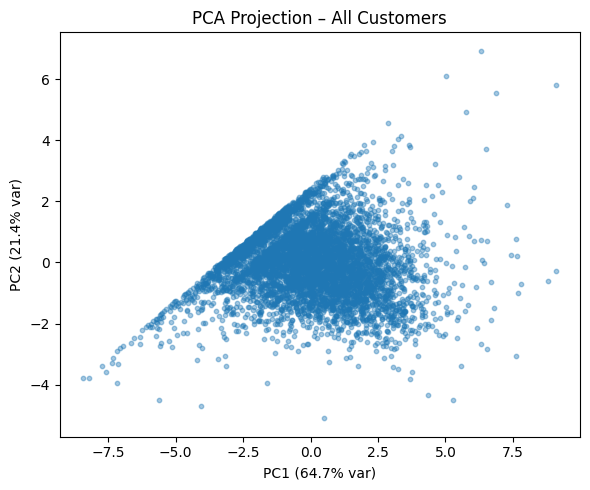
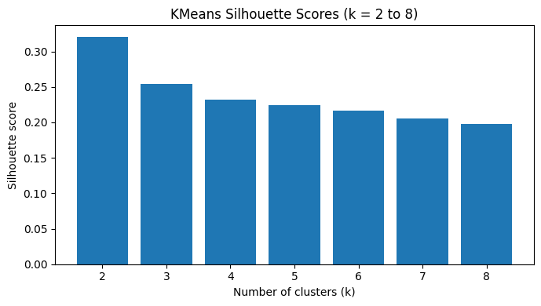

Framed as a consulting engagement: a mid-sized online retailer holds extensive transactional data but cannot identify its most valuable customers, does not know which products sell together for which customer types, and is concerned about unusual or potentially fraudulent purchasing. The pipeline turns raw invoice lines into an answer for each of those.
Cleaning the Online Retail II data meant dropping rows with no Customer ID, excluding credit notes and returns (invoices prefixed C), and removing non-positive quantities and prices — leaving 805,549 rows, aggregated to 5,878 customers.
Beyond standard RFM I added two features that turned out to matter more than the mandatory ones: AvgOrderValue (separates high-spend-per-visit from frequent low-value customers) and AvgQuantityPerInvoice (captures bulk buying). The median customer buys 3 times, spends £899, and orders 158 units per invoice — that last number already hints at a wholesale group hiding in the data.
Both a log transform and StandardScaler were applied before clustering, because spending data is heavily right-skewed and every algorithm used here is distance-based.
PCA reduced six features to two components capturing 86.1% of variance (PC1 64.7%, PC2 21.4%), producing a distinctly fan-shaped distribution. PC1 is dominated by AvgQuantityPerInvoice and Monetary, so distance along it is essentially a wholesale-versus-retail axis.

K-Means silhouette peaked at k=2 (0.321) and fell monotonically after. But HAC with average linkage scored 0.604 — nearly double — and was selected programmatically. The reason is visible in the plot above: K-Means assumes spherical, equally sized clusters, and this data is neither. DBSCAN was also tested and rejected outright, classifying 83% of customers as noise.

| Median feature | Regular buyers | Wholesale buyers |
|---|---|---|
| Customers | 5,871 | 7 |
| Monetary | £896.60 | £12,393.70 |
| Avg. order value | £284.87 | £10,877.18 |
| Avg. qty / invoice | 157.5 | 17,766 |
| Variety (unique SKUs) | 45 | 9 |
Seven customers generate roughly 14× the revenue per head while buying just 9 product types in enormous volumes. The two groups need entirely different commercial treatment: loyalty and cross-sell for retail, account management and volume pricing for wholesale.
Apriori was run separately per segment. Among regular buyers (31,212 invoices, 165 items), the strongest rule pairs the pink and green Regency teacups at lift 28.0, confidence 0.838 — a customer buying one is 28 times more likely than chance to buy the other. That is textbook set-completion behaviour and maps directly to a “complete the collection” campaign.
The wholesale segment was correctly skipped by the size threshold (7 customers, 16 invoices). Wholesale purchasing is driven by volume and margin, not product affinity, so the absence of basket rules there is the right finding rather than a gap.
STL decomposition (period=7, robust) of the top-selling item showed a consistent weekly seasonal cycle plus a non-monotonic trend, meaning inventory planning on year-over-year averages alone would mislead.
LOF (n_neighbors=20, contamination=0.01) flagged 59 anomalous customers — and notably, all 7 wholesale buyers were among them, confirming each has a distinctive individual profile. The top case placed 2 invoices worth £168,472, including a single line of 80,995 units, which is a data-integrity and fraud-review priority rather than a segmentation insight.
An SVD collaborative filter on implicit ratings tuned to n_factors = 1 (CV RMSE 1.1041), beating a BaselineOnly model (1.1230) by 1.7%.
That the optimum is a single latent factor is itself the finding: the preference structure is genuinely low-dimensional, which aligns with the two-segment clustering result. Training separate models per segment is the obvious next iteration.
The wholesale segment contains only 7 customers, so every conclusion about it is anecdotal rather than statistical. I would also validate segments against downstream outcomes such as repeat purchase and churn, rather than silhouette alone — a well-separated cluster is not automatically a commercially useful one.